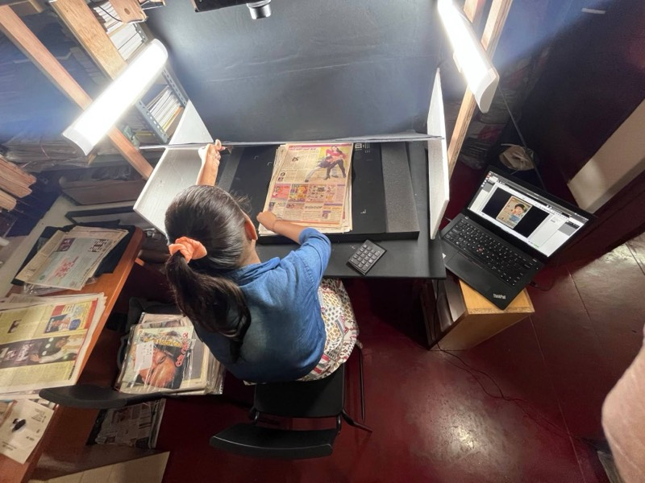

Donate
We need equipment, trained staff and more centres.
Carl Malamud's goal is one crore pages scanned every month. SOK is at 10–15 lakh now and can grow as soon as there is funding.
The gap
Money is what holds us back
“We are making progress. However, it is not easy, due to technical issues and fund raising delays,” Carl Malamud told The Hindu in August 2025. SOK has built its own scanners to keep costs down, but every new centre still needs equipment, a trained team and a climate-controlled room before a single page gets scanned.
The ambition
From 10–15 lakh pages a month to one crore
“I would like to see us scanning one crore pages every month,” Malamud told Frontline in December 2024, a six- to ten-fold increase. Getting there means more scanners, more trained technicians, and more community-run centres, each run by the community whose heritage it holds.
The figures below are approximate. A new centre needs at least three scanner stations, and what it costs depends on the space and local support available. We share a full budget and breakup on request.
 One rig
One rigEquip a Scanner Station
About ₹10–12 lakh per station
A complete open-hardware scanning station: twin DSLR cameras, an overhead copy-stand rig, diffused LED lighting, a book cradle, and a tethering setup. It is the same design running at 15 stations today.
- Digitises 5,000–10,000 pages a day
- Design is open-source and reusable
- Pays for itself versus imported scanners

One year · Highest impactTrain & Employ a Technician
About ₹30,000 a month to run one station, overheads included
Pays a trained scanning technician or cataloguer for a year. They handle fragile books, run quality checks and keep a centre's output steady.
- Trained through the SOK Academy
- Keeps a centre's output steady, not a one-off
- Builds local skills that last after the grant
 Full centre
Full centreLaunch a New Centre
At least 3 scanner stations Equipment for three: about ₹30–36 lakh. Space and local support vary by site.
Funds a complete new digitisation centre on the Mysuru model: space setup, multiple scanner stations, climate control, consumables, and a trained local team, extending SOK to a new city or collection.
- Repeats a centre model we have already run
- Brings digitisation directly to at-risk collections
- Creates local jobs and archiving expertise
Give by bank transfer
Send a gift straight to our account
- Account name
- ANUBHAVA MANTAPA SERVANTS OF KNOWLEDGE ASSOCIATION
- Account number
50200105775991- IFSC code
HDFC0001757- Bank
- HDFC Bank
- Branch
- Chandra Layout, Bengaluru 560040
After you transfer, write to us with your name so we can acknowledge your gift.
Tell us about your giftIn-kind equipment
Cameras, laptops, LED panels, hard drives or NAS storage. SOK's rigs are designed to accept donated or discounted commodity hardware.
Institutional CSR & grants
As a registered Section 8 non-profit, SOK can receive corporate CSR funding and foundation grants. Our CIN is U85420KA2024NPL186627 and our PAN is ABACA4070G. We provide other registration and compliance documents on request. Read the prospectus.
Volunteer technical time
Carl Malamud's suggestion: "adopt your local NGO" and give it a working day now and then. OCR tuning, metadata cleanup and translation all count.
Small gift or multi-year grant, write to us first
Tell us what you have in mind and we'll send a proposal to match.
Contact us